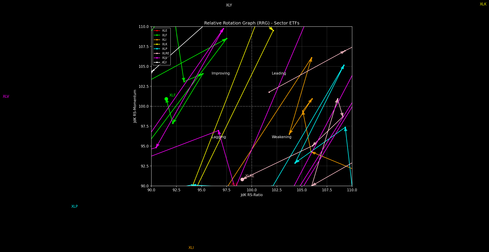

Sector Relative Rotation Graph (RRG)
Last updated: 2026-04-16 06:25 AM ET

Relative Rotation Graphs (RRG) help visualize the relative strength and momentum of different sectors against a benchmark (S&P 500).
- Leading (Top-Right): Strong relative strength and strong momentum.
- Weakening (Bottom-Right): Strong relative strength but losing momentum.
- Lagging (Bottom-Left): Weak relative strength and weak momentum.
- Improving (Top-Left): Weak relative strength but gaining momentum.